Initially, Java was the programming language for Android,
but in 2017 Google designated Kotlin as the
official language for Android, equating it with Java.
It has official support from Google and is integrated into Android Studio.
Kotlin features
Some of Kotlin's features are:
Multiplatform and multipurpose language compiled on the JVM, so it is fully compatible
with Java and its libraries (calls to Java from Kotlin and vice versa).
Object-oriented language (OOP)
It is a concise language that avoids unnecessary code (up to 40% less).
It is Null Safety, handling nulls safely and avoiding
NullPointerException errors.
Unofficially, it can be said that it is like Java but with the style of Python (its advantages).
In this course, Kotlin will be used as the programming language for Android.
Since Kotlin is a multipurpose language, it can be used to develop Android, desktop, web, or console applications.
In this unit, we will cover the fundamentals and syntax of Kotlin,
to later use the language within Android Studio to develop Android mobile applications.
If you want to create and test Kotlin scripts, you must have a Java JDK installed.
We could use IntelliJ IDEA from JetBrains,
which is the IDE that Android Studio is based on.
However, since we already have Android Studio installed, this will be the tool we use for developing Android applications and testing Kotlin code.
To do this, we have several options:
We can start a new project (or reuse a previous one, though that might clutter the file structure and is not a best practice) and create a Kotlin file, for example
Test.kt, and add the main function for our tests.
Note that the Kotlin file has the extension .kt.
Test File
Let's see a simple example of input and output:
fun main(){
val variable:String
variable = readln()
println("You have written $variable")
}
After executing it, it waits for us to type something and press enter, then it writes it on the screen.
Input/Output Input and Output
println() -> Writes to the standard output readln() -> Reads from standard input (keyboard)
Another option would be, still using a project, in our case the initial hello world.
By right-clicking on our package, we can create a new Scratch file.
Select the programming language we want, in this case Kotlin.
Let's see an example:
In this case, we use the println() function, and as we can see on the right, it shows us the output on the screen.
If we create a variable, it indicates its type, and if we display the variable, it shows the value of the variable at that moment.
Keep in mind that a scratch file executes from top to bottom as we can see.
Kotlin Style Guide
In any programming language, it’s important for the code to be readable.
Official platforms usually provide style guides for developers to follow,
and it’s advisable to review these guides to develop proper code.
You can also use the option Code -> Reformat Code (Ctrl+Alt+L) in the IDE, so that the code is formatted according to style guidelines
(as long as the settings in the IDE have not been modified).
Greetings in Kotlin
As previously mentioned, Kotlin files have the extension .kt, and unlike in Java,
everything does not need to be inside classes.
Functions can exist outside of classes, specifically the main function main does not need to be inside a class.
The main function can accept arguments, but it is not required. It's also unnecessary to declare the visibility of the function (public/static).
The println() function is available without needing to use Java's System.out, and the
readln() function captures user input from the console as a string.
The semicolon at the end of each statement is optional, but by convention, it should not be used.
Comments, both inline and block, are the same as in Java: // and /* */.
Package and Imports
As in Java, the package the file belongs to and the imports should be placed at the top of the file.
String templates allow integrating variables into strings by using the $ symbol followed by the variable name. Kotlin will replace it with the value stored in the variable.
If the variable is an object or if you want to operate with it, you should wrap it in curly braces { }.
"The discount is $discount %"
"The price is ${product.price} €"
""" |Notebook $notebookPrice €
|Blue pen $penPrice €
| Total: ${notebookPrice + penPrice}
""".trimMargin()
It is recommended to always use string templates and raw strings.
Although you can concatenate strings with the + character, its use should be avoided.
Additionally, using multiple println statements in sequence should also be avoided.
Arrays
Arrays are fixed-length data structures that allow storing multiple values of the same type (numbers, characters, strings, booleans, objects).
1 2 3 4 5
"Rick", "Morty", "Summer"
We will cover them in more detail later.
Variable Declaration
Using the reserved word var, variables are declared.
Variables are like boxes that store values, and these values can change during the program's execution.
Kotlin is a statically typed language, meaning that once a variable is of a certain type, that type cannot change (similar to Java).
When declaring a variable, you can either specify the data type or not.
If not specified, Kotlin will infer the type based on the assigned value.
When declaring a variable, one of these two options must be followed:
Specify the type of data to be stored.
Specify the value to be stored (Kotlin will infer the data type).
You can also declare a variable by specifying both the data type and the value to be stored.
Declaring Simple Type Variables
var name: String = "Rick Sanchez"
var dimension = "c-137" // the data type is inferred
var gender: Char = 'h'
var age: Int
age = 70
var isAlive: Boolean = true
Array Declaration
Arrays are objects and are created using the Array class, which provides get and set methods,
but for convenience, square brackets [ ] can also be used.
// The data type of the array is specified
var numbers: Array = arrayOf(1, 2, 3, 4, 5)
// The data type of the array is inferred
var names = arrayOf("Rick", "Morty", "Summer")
println(numbers[1]) // numbers.get(1)
numbers[3] = 12 // numbers.set(3, 12)
println("There are ${names.size} names")
You can use the Array class constructor to specify the size and even a lambda function to fill the elements.
var array = Array(size = 10) { } // array of 10 empty elements (Unit)
var zeros = Array(size = 5) { 0 } // array of 5 integers, all 0
var emptys = Array(size = 5) { "" } // array of 5 strings, all ""
var serie = Array(size = 100) { it } // array of 100 integers: 0, 1, 2, ... 99
var reverse = Array(size = 50) { 50 - it } // array of 50 integers: 50, 49, 48, ... 0
The code inside the curly braces is a lambda function (anonymous), which will be explained later.
In this lambda function, the variable it represents the iteration number, starting from zero.
As Android Studio has code hints enabled by default, leaving a line break between the braces will show this information.
Creating an array of the first 10 even numbers.
val a = Array(10){
it*2
}
for(b in a) print("$b ")
Declaring Multidimensional Arrays
Multidimensional arrays are arrays where each element is also an array.
The most common type is matrices, which can be represented as a table.
There are several ways to declare a multidimensional array in Kotlin:
Accessing matrix elements is done using row and column indices.
val matrix = arrayOf(
arrayOf(5, 3, 2, 0),
arrayOf(4, 9, 4, 5),
arrayOf(8, 1, 7, 6)
)
matrix[1][3] = 8 // Sets the value at row 1, column 3 to 8
for (row in matrix) {
for (column in row) {
print("$column ") // Prints each element in the row followed by a space
}
println() // Moves to the next line after printing a row
}
The Any Type
All variable types are classes, and in Kotlin's hierarchy, they have a superclass called Any (similar to Object in Java).
You can declare a variable using the Any type and then assign any kind of data to it. This can be useful in certain cases, as will be explained later.
var number: Any = 6
var name: Any = "Rick Sanchez"
var isAlive: Any = true
var numbers = arrayOf(1, 2, 3)
To use a variable, it must store a value.
There is a data type that allows a variable to be left empty, known as Unit (similar to void in Java).
val variable1: Any
// Produces an error because the variable has not been initialized
println("variable value: $variable1")
val variable2: Any = Unit
// Works correctly
println("variable value: $variable2")
Variable Scope
The scope of a variable is the area where it can be used.
Generally, a variable can be used within the entire code block where it is declared, which is delimited by curly braces { }.
A variable can be used inside the entire block, including other blocks within it.
If a variable is declared outside a block { }, it can be used in all project files.
Type Conversion
If you want to perform a type conversion, you must use a method of the class corresponding to the type you wish to convert to.
For example, to convert a Double to an Int, you must use the toInt method from the Double class on the decimal variable.
This will also truncate the value, meaning the decimal part will be lost.
var decimalNumber: Double = 12.34
var intNumber: Int
intNumber = decimalNumber.toInt()
When a value is read from the keyboard, it is always treated as a string, so if a number is requested, it must be converted to an integer or decimal as needed:
var number = readln().toInt()
Constant Declaration
The reserved word val is used to declare constants.
Its usage is similar to variables declared with var, except that once a value is assigned, it cannot be changed during program execution.
However, constants can be assigned during the program execution, for example, after asking the user for a value.
Right after defining it, you should initialize it on the same line.
Arrays and all objects can be declared as val and later have their values changed.
This is because they are objects, and with val, the reference stored cannot be changed, but the values within the object can be modified.
val numbers = arrayOf(1, 2, 3, 4, 0)
// The content of the elements can be changed
numbers[4] = 5
// Since it is declared as val, the object itself cannot be reassigned
numbers = arrayOf(1, 2) // This will produce an error
You can use the reserved word const before the val declaration to define constants with known values.
These constants cannot be assigned during program execution, so they must be defined outside of functions.
Constants declared with const can be declared inside singleton objects (a class with a single instance, which will be discussed later).
Operators
They allow creating expressions. They are similar to those in Java:
Sign: + -
Arithmetic: + - * / %
Assignment: = += -= *= /= %=
Increment: ++ -- (can be pre-increment or post-increment)
Relational: == != < > <= >=
Logical: && || !
Bitwise: and or xor inv shl (shift <-) shr (shift ->)
The Elvis operator ?: allows providing a default value when a variable holds the null value.
The most common use is to obtain a non-null value when a property is null or a method returns null.
This operator can also be used to throw an exception.
If multiple statements need to be executed after the Elvis operator, they should be enclosed in a run { } block (this will be explained in more detail later).
The last statement in the block should be the value to assign if the variable is null.
val a = b ?: run {
val valueWhenBIsNull = c.notNullValue()
storeValue(valueWhenBIsNull)
valueWhenBIsNull // This is the default value returned by the Elvis operator
}
The !! Operator
When you are absolutely sure that a variable that can store null does not store null,
you can use the !! operator to bypass Kotlin's null-checking mechanism.
In this case, if the variable stores null, a NullPointerException will be thrown.
var nullableName: String? = "Morty Smith"
println(nullableName!!.uppercase())
This operator often appears in Java-to-Kotlin migrations.
Kotlin's philosophy is contrary to its use. In other words, it is not recommended to use it!
Regular Expressions
In every programming language, it is necessary to check if the values entered by the user meet specific rules.
A very typical action is to check if the user has entered a value and whether that value is an empty string or not.
Sometimes, these checks might not be enough for the program's requirements, in which case regular expressions must be used.
Regular expressions are character patterns that allow checking if a string of characters matches the pattern or not.
Typical examples of checks with regular expressions:
That a name doesn't contain numbers.
That it has a specific length.
That characters follow a certain order (like a DNI: 8 digits and 1 letter).
That it is a valid email address.
...
Regular expressions exist in many programming languages, so it's important to understand how they work.
To create a regular expression in Kotlin, use the Regex class:
val checkDNI = Regex("regular_expression")
You can also specify modifiers for the regular expression:
val check = Regex("regular_expression", RegexOption.IGNORE_CASE)
Designing regular expressions is a skill that becomes more complex as you want to check more advanced patterns.
Below is a brief guide on how to use regular expressions in a basic way.
Grouping
[ ] [abc] contains any character from the specified set.
[^ ] [^abc] contains any character not in the specified set.
[ - ] [0-9] contains any character in the range.
[^ - ] [^A-B] contains any character not in the range.
( | ) (x|y) contains one of the characters (using | as a separator).
Character Count
{ } a{3} contains exactly 3 'a's in a row.
{ ,} a{3,} contains 3 or more 'a's in a row.
{ , } a{3,5} contains 3, 4, or 5 'a's in a row.
* a* contains 0 or more 'a's. Similar to: a{0, }
+ a+ contains 1 or more 'a's. Similar to: a{1, }
? a? contains 0 or 1 'a'. Similar to: a{0,1}
Start – End
^ ^hello starts with "hello".
$ hello$ ends with "hello".
^ $ ^hello$ exactly matches "hello".
Others
\\s a whitespace character.
\\S any non-whitespace character.
\\w a letter.
\\C not a letter.
\\d a digit. Similar to: [0-9]
\\D not a digit. Similar to: [^0-9]
Examples of regular expressions in Kotlin
// contains 4 lowercase letters
"[a-z]{4}"
// contains 8 characters: letters and/or numbers
"[a-zA-Z0-9]{8}"
// 7 or 8 digits followed by 1 letter (DNI)
"^\d{7,8}\w{1}$"
// set of letters, followed by an @, followed by a set of letters,
// followed by a dot, followed by 2 or 3 letters
// simple email pattern: rick_sanchez@mail.com
"^[a-z_.]+@[a-z]+\.[a-z]{2,3}$"
To check if a variable matches a pattern defined by a regular expression, you can use methods from both the String class and the Regex class:
val name = "Rick"
// Starts with an uppercase letter followed by at least two lowercase letters
val checkName = Regex(pattern = "^[A-Z][a-z]{2,}$")
// String verification
println(name.contains(checkName))
// Regex verification
println(checkName.matches(name))
The Regex class also has additional methods with different functionalities, such as:
These are instructions that allow altering the normal flow of program execution. They are very similar to those in any other language.
if
if – else
if – else if – else
when
for
while
do – while
repeat
Style guide for curly braces { }:
Curly braces are not needed for when branches or if expressions
that don't have more than one else branch and fit on a single line.
Curly braces are needed for any branch of if, for, when, do,
and for while statements and expressions, even if the body is empty or contains only one statement.
if, if-else, and if-else if-else
If it can be written on one line, omit the curly braces, and it is preferred to write it that way.
if as an expression
The if statement can be used as an expression, for example, to assign a value to a variable, as seen in the example:
In this case, you can write the expression like this, but it's mandatory to include the else branch.
If used as an expression, the else branch is mandatory.
When using if as an expression, curly braces can be used for multiple statements.
In this case, the last statement in the curly braces must be the value to assign.
If used as an expression with code blocks, the last expression must be the value to assign without needing to equal it to the variable.
var highNumber = if (number1 > number2) {
// instructions
number1
} else {
// instructions
number2
}
println("The highest number is $highNumber")
when
A condition with multiple branches (similar to switch in Java):
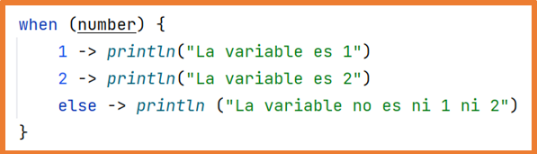
If there are multiple statements in any branch, curly braces should be used for all branches:
With when, you can group values:
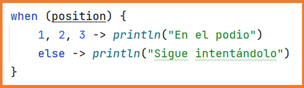
You can also use expressions to evaluate:
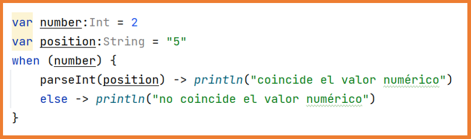
It is possible to use in or !in to use ranges and collections to evaluate:
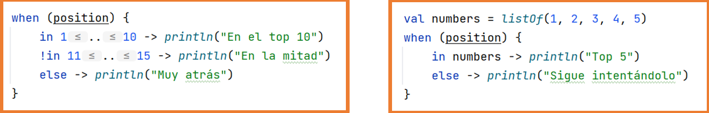
You can check if the variable is of a type or not using is or !is:
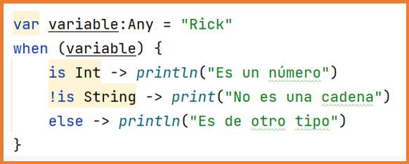
In some cases, the else branch is mandatory, for example, if the result of the expression is a boolean:
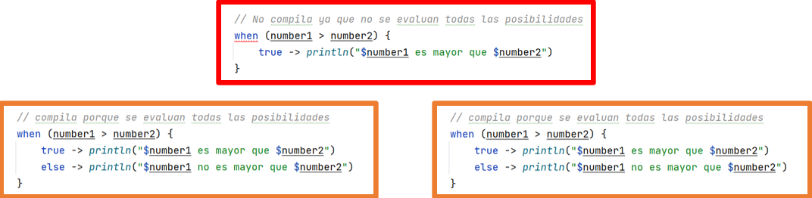
If no variable is provided for evaluation, when can be used to replace if-else blocks:
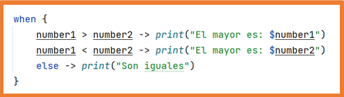
It can be used as an expression, in which case the else branch is mandatory unless the compiler can verify that all options are covered:
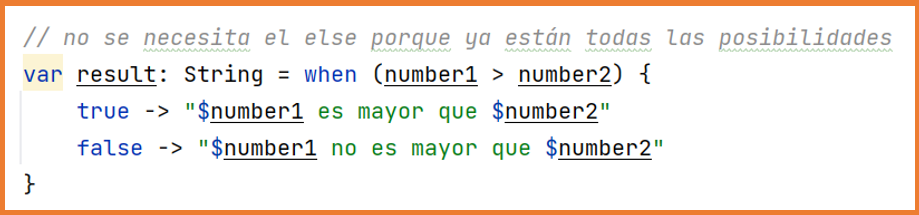
for
for loops in Kotlin are a bit different as they use ranges, progressions, and collections for iterations.
Ranges: ascending/descending series of Int, Long, or Char.
Progressions: like a range but with a step parameter between elements.
Collections: sets of elements like arrays.
Ranges and progressions
There are different ways to create ranges and progressions. The image on the left shows how they are created, but by default, Android Studio has code hints enabled. Once the range is created, you will see it displayed as in the right image with more information.
All ranges can be used as progressions with a default step of 1 or converted into progressions with an explicit step as shown in the last example.
for loops for ranges, progressions, and collections
for loops use ranges, progressions, and collections, and to iterate through them, the word in is used.
It also works with ranges of characters:
The for statement allows iterating through objects that provide an iterator such as strings, lists, arrays, or collections.
You can access the position in two ways.
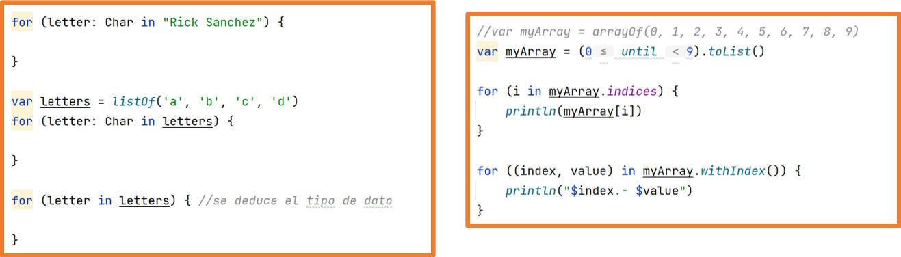
while and do-while
while: first checks the condition; it’s possible that the body may not execute.
do-while: the condition is evaluated after the body is executed, so the body runs at least once.
repeat
The repeat function repeats the body’s code the specified number of times, internally executing a for loop.
repeat(times = 100) {
println("The 'Bart Bills' are not legal tender.")
}
repeat(times = 100) { index ->
println("${index + 1}.- The 'Bart Bills' are not legal tender.")
}
break, continue, and return
Kotlin provides three typical ways to break the flow of a loop.
return: exits the loop and the function containing it.
break: exits the current loop.
continue: skips the current iteration of the loop.
In Kotlin, statements can be labeled using the @ character as labelName@, allowing you to break the flow of any series of nested loops.
By adding labels, a break will terminate the loop that is labeled.
firstFor@ for (i in 1..10) {
for (j in 1..5) {
if (i % 2 == 0 && j == 2) break@firstFor
println("$i - $j")
}
}
Collections are a data type that allows storing a variable number of elements, zero or more.
Typically, a collection will store elements of the same data type.
You can store data of different types, but in that case, you must be especially careful when using the collection.
Additionally, collections can store the null value in any of their elements. There are four types of collections in Kotlin:
Array:
Collection of elements.
Elements are accessed by their position index.
Elements can be repeated.
Two arrays are not equal even if they contain the same elements in the same position.
List:
Ordered collection of elements.
Elements are accessed by their position index.
Elements can be repeated.
Two Lists are equal if they contain the same elements in the same position.
Set:
Collection of elements without order.
Elements cannot be repeated in a Set.
Two Sets are equal if they contain the same elements, regardless of order.
Map:
Also called dictionaries.
A Map is a set of key-value pairs, and the key cannot be repeated.
Two Maps are equal if they contain the same key-value pairs, regardless of order.
For List, Set, and Map, Kotlin offers two versions:
Immutable:
Elements cannot be added or removed from the collection.
No elements in the collection can be modified.
Mutable:
Elements can be added, removed, and modified in the collection.
List and MutableList
Whether mutable or not, they can be declared with either val or var.
Their internal behavior dictates whether they can be modified or not.
Some operations on List and MutableList
Operations that modify are only applicable to MutableList
val list = listOf("uno", "dos", "tres", "cuatro", "cinco")
list.size // Returns the value 5
list[2] // Returns the string "tres"
list.indexOf("cuatro") // Returns the value 3
list.lastIndexOf("dos") // Returns the value 1
list.subList(1, 3) // Returns the list ["dos", "tres"]
val mutableList = mutableListOf(1, 2, 3, 4, 5)
mutableList.add(6) // Adds the element 6 to the end of the list
mutableList.add(index = 2, element = 100) // Adds the element 100 at position 2, shifting the rest to the right
mutableList.removeAt(index = 4) // Removes the element at position 4
mutableList[1] = 99 // Changes the value at position 1 to 99
mutableList.contains(3) // Returns true/false if the value is found or not
mutableList.sort() // Sorts the elements of the array in ascending order
mutableList.sortDescending() // Sorts the elements of the array in descending order
mutableList.max() // Returns the largest element
mutableList.min() // Returns the smallest element
mutableList.isEmpty() // Returns true/false depending on whether the list is empty or not
mutableList.isNotEmpty() // Returns true/false depending on whether the list is not empty
mutableList.shuffle() // Randomly shuffles the elements of the array
mutableList.shuffled() // Returns an array with the elements randomly shuffled
mutableList.first() // Returns the first element of the array
mutableList.last() // Returns the last element of the array
mutableList.count() // Returns the count of elements in the array
mutableList.reverse() // Reverses the elements of the array
mutableList.reversed() // Returns an array with the elements in reverse order
Some operations on Set and MutableSet
Operations that modify are only applicable to MutableSet
val names = mutableSetOf("Ana", "Jorge", "Lucía")
names.add("Lucas") // Adds a new element
names.add("Ana") // Does not add the element as it already exists
names.add("ana") // Adds the element -> "ana" != "Ana"
names.remove(element = "Jorge") // Removes the element if found. Returns true/false
names.contains("ana") // Checks if the element exists. Returns true/false
names.min() // Returns the smallest element
names.max() // Returns the largest element
names.isEmpty() // Returns true/false if the set is empty
names.isNotEmpty() // Returns true/false if the set is not empty
names.first() // Returns the first element in the set
names.last() // Returns the last element in the set
names.reversed() // Returns a set with the elements in reverse order
names.shuffled() // Returns a set with the elements in random order
names.isEmpty() // Returns true/false if the set is empty
names.isNotEmpty() // Returns true/false if the set is not empty
names.count() // Returns the number of elements in the set
val set1 = setOf(1, 3, 4, 8, 7, 12, 15)
val set2 = setOf(24, 7, 5, 1, 8, 6)
// Returns a set with the elements from both groups without repetitions
val joinedGroups = set1 union set2
// Returns a set with the common elements in both groups
val commonElements = set1 intersect set2
// Returns a set with the elements of group2 that are found in group1
val differentElements = set1 subtract set2
Map
Creating a Map
Creating a MutableMap
val person: MutableMap = mutableMapOf(
"name" to "Rick Sanchez",
"age" to 70,
"alive" to true,
"dimension" to "c-137"
)
Some operations on Map and MutableMap
Operations that modify are only applicable to MutableMap
val person = mutableMapOf(
"name" to "Rick Sanchez",
"age" to 70,
"alive" to true
)
person.put("dimension", "c-137") // Adds the key-value pair to the Map
person.remove(key = "age") // Removes and returns the element that matches the key
person.keys // Returns a list of keys
person.values // Returns a list of values
person.size // Returns the number of key-value pairs
person.clear() // Clears the Map
// Iterate through a Map or MutableMap
for ((key, value) in person) {
println("$key -> $value")
}
Operations on collections
Some operations on collections return a boolean value indicating whether the operation was successful or not.
For example, add and remove.
If you want to know all the available operations for List, Set, and Map, whether mutable or read-only, you should consult the official documentation.
There are operations on collections that allow performing operations on all elements of the collection and return a new collection with the results.
You could say they "iterate" over the collection.
These operations accept a lambda function, which means you must use curly braces to delimit the instructions. (The use of a lambda function was also seen in the array declaration, and they will be fully explained later).
Within the lambda function, it will be available as the current element.
forEach
Iterates over all the elements of the collection, allowing actions to be performed on them.
filter
Returns the collection with elements that meet the condition.
map
Returns the collection by applying a transformation to each element.
Sequences
Sequences allow optimizing operations on collections.
val list = listOf("Uno", "Dos", "Tres", "Cuatro", "Cinco")
val secondList = list.filter { it.length > 3 }
.map { it.uppercase() }
In the previous example, both operations are performed on all elements of the list, generating intermediate lists that don't disappear until all operations are complete.
This behavior, when the collection has many elements and/or many operations are performed on it, will penalize application performance.
To improve this behavior, you can convert the collection to a sequence, perform all the operations, and finally generate the collection again.
The sequence does not generate intermediate collections.
val list = listOf("Uno", "Dos", "Tres", "Cuatro", "Cinco")
val secondList = list.asSequence()
.filter { it.length > 3 }
.map { it.uppercase() }
.toList()
Sequences only generate their elements when used, allowing them to generate an infinite number of values, which can then be used.
You must be careful, as the application could get stuck waiting for the sequence to finish.
// Generates an infinite sequence of odd numbers
val oddNumbers = generateSequence(seed = 1) { it + 2 }
// Iterates through the sequence and generates a list with elements less than 200
val oddNumbersTo200 = oddNumbers.takeWhile { it < 200 }.toList()
Functions
Built-in Functions
As with any programming language, Kotlin incorporates a large number of pre-programmed functions ready to use.
Some have already been seen: println, toInt, toString…
For arrays, for example, you have functions such as:
In Kotlin, functions are declared with the keyword fun.
Here is an example of a function and its call:
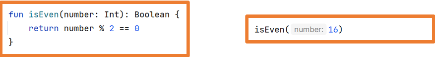
Functions can have no parameters and return no values.
If no return type is specified, it returns Unit, which is equivalent to void in other programming languages.
If nothing is returned, : Unit can be omitted.
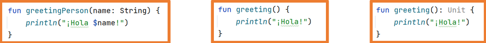
Parameters are separated by commas, and the use of the trailing comma is allowed (final comma).
Input parameters are immutable, meaning their values cannot be changed within the function body, as if they were declared with val.
To modify them, you must create a copy.
If the function can be written in a single line, you can remove the braces and add the symbol = before the body.
Other Functions:
fun greeting(nombre: String) = println("¡Hola $nombre!")
// Prints a greeting with the provided name
fun addition(num1: Int, num2: Int): Int = num1 + num2
// Adds two numbers and returns the result
fun isEven(num: Int): Boolean = num % 2 == 0
// Checks if a number is even and returns true/false
// If the return type is not specified, Kotlin infers it
fun inRange(num: Int, min: Int, max: Int) = num in min..max
// Checks if the number is within the range defined by min and max
fun inRange(num: Int, range: IntRange) = num in range
// Checks if the number is within the given IntRange
Named Parameters
You can use parameter names when calling a function, allowing you to change the order of parameters.
Just like with ranges, Android Studio shows hints to indicate parameter names.
Default Values
It is possible to define default values for input parameters, allowing you to omit those parameters if desired.
If default values are used in the function definition and named parameters in the function call, intermediate parameters can be omitted.
fun finalPrice(
price: Double,
vat: Int = 21,
discount: Int = 0,
): Double {
var finalPrice: Double = price
if (discount != 0) finalPrice -= price * discount / 100
return finalPrice + finalPrice * vat / 100
}
// Examples of calling the function:
finalPrice(price = 355.0, vat = 10, discount = 5) // Discount and VAT explicitly set
finalPrice(price = 355.0, vat = 10) // Default discount value
finalPrice(price = 355.0, discount = 20) // Default VAT value
If both named and unnamed parameters are used in the function call, the named arguments must come last unless they occupy their correct place.
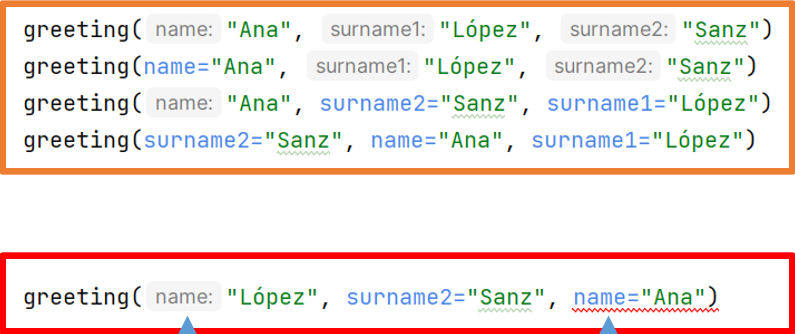
Variable Number of Parameters
It is possible to declare a variable number of parameters.
This is done using a parameter with the vararg keyword.
It is usually the last parameter. If not, subsequent parameters must be passed using their name.
With an intArray or a collection that can be converted to intArray, you can use the *
(spread operator) to pass it entirely as a vararg parameter.
Function Overloading
Kotlin allows function overloading even if they are not defined within a class.
In previous examples, the max function was created, which already exists, causing an overload. You can see both your function and the system's.
Scope of Functions
Like variables, the scope of a function determines where it can be used.
In Kotlin, the following types of functions exist:
Top-level functions.
Local functions.
Member functions.
Extension functions.
Depending on the type, it can be used in different parts of the code.
Top-level Functions
They are defined without being inside any block { } or class.
They are typically used as function libraries, where a file includes several top-level functions that can be used anywhere.
They can be used throughout the file itself and in any file where they are imported.
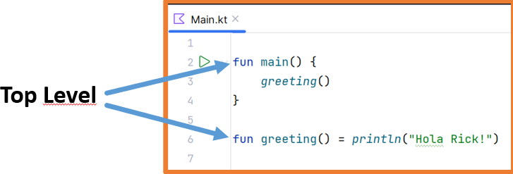
Local
Local functions are defined within another function and can be used throughout the { } block of that function, even from other local functions within the same parent function.
They must be defined before any call to them.
Local functions can use the local variables of the parent function.
Member Function
These are functions defined within classes or objects.
In object-oriented programming, they are known as methods.
They are covered in the next section, OOP (Object-Oriented Programming).
Extension Functions
Kotlin allows you to extend the functionality of classes by adding functions to them.
These functions only exist within the scope in which they are defined.
fun main() {
val number = (0..100).random() // Generate a random number between 0 and 100
if (number.isOdd()) println("$number is odd") // Check if the number is odd
else println("$number is even") // Otherwise, it's even
}
// Adds a function to the Int class
fun Int.isOdd(): Boolean {
return this % 2 != 0 // Returns true if the number is not divisible by 2
}
Inline Functions
In a normal function, its code is stored in memory once. Each time it's invoked, the parameters are added to the stack, and the function is called.
In an inline function, the invocation does not occur. Instead, the function's code is inserted each time it is used.
In theory, an inline function has better performance compared to regular functions because it avoids using the stack to pass parameters and prevents jump and return instructions.
However, this depends on how the code is compiled.
For instance, in the Java Virtual Machine (JVM), even machine code instructions use the stack.
Since the code must be "copied" each time the inline function is called, the executable size will increase as the inline function grows.
inline fun suma(a: Int, b: Int) = a + b
val c = suma(2, 2)
The real advantage of inline functions comes into play when they are applied to higher-order functions.
Higher-order functions have some performance penalties (both in time and memory).
When calling the Lambda parameter, a new object is created in memory, containing a method with the parameters specified in the Lambda.
As mentioned at the beginning of this unit, Kotlin aims to be concise and avoid writing excessive code.
This feature becomes very apparent when developing classes.
We will study both the traditional way of coding classes like in Java and Kotlin's recommended approach.
To create classes, the reserved word class is used, just like in Java.
Kotlin allows more than one public class to be defined in a single .kt file (this is not allowed in Java).
If only one class is defined in a .kt file, then the filename must be the name of the class.
If several classes are defined in a .kt file, then a representative filename should be chosen.
In Kotlin, all classes inherit from the Any class (in Java, it's Object).
The Any class defines three methods inherited by its subclasses:
equals -> indicates if one object is equal to another
hashCode -> returns the hash code of an object
toString -> returns the string representation of an object
Example of a class definition in Kotlin:
Kotlin is so concise that a class without a body can be defined like this:
Even without a body, an object of this class can be instantiated:
You can see that the structure of defining a class is similar to that used in Java.
Getters and setters are defined after each property.
The constructor is defined with the word constructor.
class Product {
var name: String
get() {
return field // Returns the value of the property
}
set(name: String) {
field = name // Updates the value of the property
}
var price: Double
get() {
return field // Returns the value of the property
}
set(price: Double) {
field = price // Updates the value of the property
}
constructor(name: String, price: Double) {
this.name = name // Initializes the name property
this.price = price // Initializes the price property
}
}
Unless otherwise specified, classes, properties, and methods are public by default.
There are visibility modifiers:
public
private
protected
internal -> visible within the same module (package)
Kotlin saves code using expression functions (in one line):
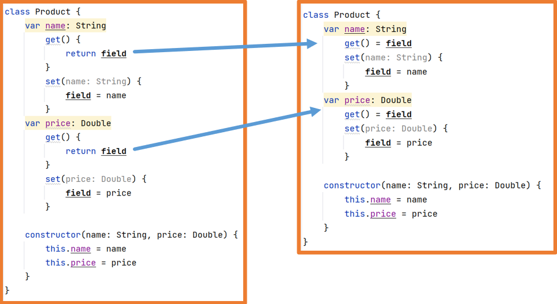
Kotlin also saves code by making getters and setters implicit:
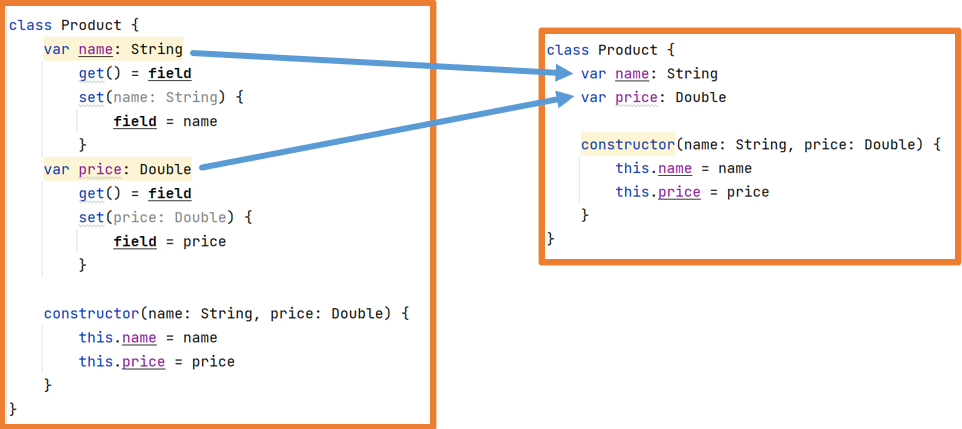
Kotlin allows further code reduction by incorporating properties into the class definition, making the constructor implicit:
Constructors
With this structure, you get the constructor, getters, and setters:
If no specific actions are needed in the constructor, getters, or setters, this syntax saves a lot of code.
Using this syntax, the constructor is referred to as the primary constructor.
Constructors defined in the class body are called secondary constructors.
Constructors are declared with the reserved word constructor.
There is constructor overloading, as can be seen with the constructor.
If a property does not appear in any constructor, it must have a default value.
If both primary and secondary constructors are used, the this keyword must be used in the secondary constructors.
The this keyword calls the primary constructor (similar to super in Java).
There may be no constructors at all.
In that case, properties must be assigned a value in their declaration.
If the primary constructor is used but actions are required on the properties, an init block should be used.
Member Functions
Member functions (methods) can be defined within classes.
The same function defined with a body:
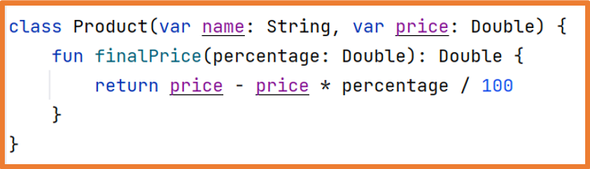
If you override a function from a parent class, you must add the override keyword to the function definition.
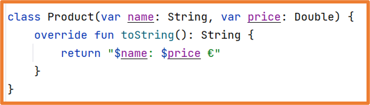
Obviously, you can combine all of the above:
Primary constructor
init block for primary constructor actions
Secondary constructor
Implicit getters and setters
Overloading inherited functions
class Product(var name: String) {
var price: Double = -1.0 // Default price set to -1.0
init {
name = name.uppercase() // Convert name to uppercase during initialization
}
constructor(name: String, price: Double) : this(name) {
this.price = price // Assigns the provided price
}
override fun toString(): String {
return "$name: $price €" // Returns the string representation of the product
}
}
To change the access type of class properties, you simply add it before their declaration.
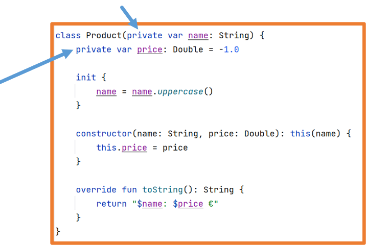
Since getters and setters are implicit, they will have the same access type as the properties, and this can only be changed to more restrictive access.
This behavior may be problematic since if you want to encapsulate the class properties (a typical OOP feature), you won't have access to them when using the class objects.
fun main(){
val p1 = Producto(name= "Mesa")
println(p1.name) //No read access
p1.name = "Silla" //No write access
println(p1.price) //Read access granted
p1.price = 20.0 //No write access
println("Bye world")
}
class Producto(private var name: String){
var price:Double = 10.0
get() = field //Not needed here
private set
init{
name = name.uppercase()
}
constructor(name:String, price:Double):this(name){
this.price = price
}
override fun toString(): String {
return "$name: $price €"
}
}
To solve this issue, you can create public methods to access private properties.
Although this solution goes against Kotlin's philosophy of saving code.
As seen previously, once a class is declared, its usage is similar to Java.
Access to properties and functions is done using dot notation:
Enum class in Kotlin
The enum class allows defining a set of constants related to each other.
It provides a safe way to handle these values without the risk of errors.
Data class in Kotlin
Data classes are a way to model data where the purpose of their objects is simply to store data.
They are very simple classes that only contain attributes.
They are used to interact with other classes or external APIs.
To declare this type of class, the keyword data is used.
Kotlin provides data classes with a set of utility functions or features:
equals(): Compares two objects of the class. It compares the content of the attributes.
hashCode(): Hash code (used in the previous function).
copy(): Creates a copy of the object, attribute by attribute, but they are distinct objects.
toString(): Generates a readable string with the object's data. It doesn't show memory references.
component1(), component2(): Retrieves each property of the object in its declared order.
Properties not present in the primary constructor will not benefit from the features of data classes.
For example, when using toString, only the properties in the primary constructor will appear.
With the copy function, entire objects can be copied, and values of the properties can be changed during the copying process.
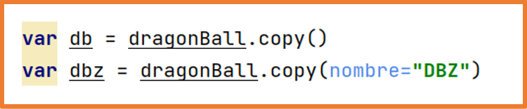
Objects of a data class can be deconstructed, allowing the values of its properties to be extracted into variables.
If a value is not needed, the _ symbol should be used in its place.
If the unwanted values are at the end of the list, you can simply omit them.
Initialization with lateinit vs lazy (Delegation)
Typically, non-null variables must be initialized in the constructor.
However, this is not always the best option.
If we do not want to initialize a property in the constructor, we have two alternatives, lateinit and lazy.
With lateinit, we achieve delayed initialization,
informing the compiler that the initialization will occur later in the code. If we attempt to access a variable before it is initialized,
we will encounter an error such as Caused by::
kotlin.UninitializedPropertyAccessException: lateinit property test has not been initialized.
lateinit var text: String
fun doSomething() {
text = "a value"
println("Length is "+text.length)
texto = "Another value"
}
The lateinit modifier can only be used for mutable variables (var) declared in the class body (not in the primary constructor),
and only when that variable does not have a custom getter or setter.
With lazy, we achieve deferred initialization,
meaning that a variable will not be initialized unless it is used in our code.
It will be initialized only once and will retain its value thereafter.
public class Example{
val name: String by lazy { "Rosa López" }
if(condition) print("${name.length}") //Initialization takes place here
}
In the previous example, both the first and subsequent calls to name will return "Rosa López".
Once we know what each of these functions does, when should we use each?
lazy can only be used for immutable val variables, whereas
lateinit can only be applied to mutable variables,
as the immutability of that variable cannot be guaranteed, because it cannot be compiled as final.
A lateinit variable can be initialized anywhere within the object where it is visible.
If we need the variable to be initialized from outside, in an unknown way beforehand, we will need to use lateinit.
Extension Functions
Kotlin allows you to extend the functionality of existing classes,
whether they are system classes or your own, without using inheritance, even if the existing class is final.
Extension functions are defined outside the class definition, meaning they can only be used in the scope where they are defined.
Although the extension function is defined outside the class, it behaves as if it were defined within the class, functioning like an additional method. It can access both properties and methods of the class, even if they are private.
An example of an extension function was already shown in the section on functions:
These functions are defined like any other functions, but with the name of the class to be extended.
Here’s an example of an extension function for an existing class:
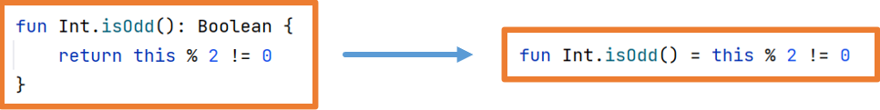
And an extension function for your own class:
A typical use case for extension functions occurs with collections.
Thanks to an extension function, you can perform an action on each element of the collection.
The output would be:
An extension function cannot override a member function.
An extension function can overload a member function.
Although no error is shown, if you attempt to override a member function with an extension function, the member function will always be called during execution.
Singleton
In Kotlin, you can create a singleton, which is a unique object of its class. This means that there can only be one instance of that class.
object Author{
var name = "Carlos Tarazona"
var company = "2DAM"
var date = Date()
override fun toString(): String {
return """$name ($company)
|$date""".trimMargin()
}
}
You can also add extension functions to a singleton, just like with any other class.
If declared globally in the .kt file, you can add extension functions in the same way as with any other class.
Inheritance
In Kotlin, all classes are final by default, meaning inheritance is not allowed unless explicitly indicated.
To allow a class to be a superclass, you need to use the reserved word open.
If using the primary constructor with default getters and setters:
This code provides:
The Product class with a constructor, getters, and setters
The Monitor class, with its constructor calling the parent class's constructor, and inheriting the parent class's getters and setters
New properties and methods can be added as well.
In the child class, the primary constructor is automatically created, which calls the parent class's constructor. A secondary constructor is also created, which calls the primary constructor using this.
Abstract Classes
To declare an abstract class, you use the reserved word abstract before the word class.
Abstract classes cannot be instantiated.
abstract class Product(var name: String, var trademark: String) {
abstract var price: Double // Abstract property that must be implemented by subclasses
abstract fun powerOn() // Abstract method that must be implemented by subclasses
abstract fun powerOff() // Abstract method that must be implemented by subclasses
fun information() {
println("$name ($trademark): $price €") // Prints the product's information
}
}
class Monitor(
name: String,
trademark: String,
var color: String,
override var price: Double
) : Product(name, trademark) {
override fun powerOn() {
println("Powered On") // Prints when the monitor is turned on
}
override fun powerOff() {
println("Powered Off") // Prints when the monitor is turned off
}
}
In this exercise, we will create an employee management system using object-oriented programming with inheritance, polymorphism, and function and constructor overloading. The system will contain three types of employees: Employee, Manager, and Technician. Each type of employee will have specific properties and behaviors.
Class Definitions
Create a base class called Employee with the following properties and methods:
Properties: name (String), age (Int), salary (Double).
Methods: calculateMonthlyPay(), which calculates the employee's monthly pay.
Create a Manager class that inherits from the Employee class with additional properties and methods:
Properties: department (String), bonus (Double).
Methods: calculateMonthlyPay(), which overrides the base class method to include the bonus in the manager's pay.
Create a Technician class that inherits from the Employee class with additional properties and methods:
Properties: level (String), overtimeHours (Int).
Methods: calculateMonthlyPay(), which overrides the base class method to calculate the technician's pay considering overtime hours.
Solution:
open class Empleado(val nombre: String, val edad: Int, val salario: Double) {
open fun calcularPagoMensual(): Double {
return salario
}
}
class Gerente(nombre: String, edad: Int, salario: Double, val departamento: String, val bono: Double) : Empleado(nombre, edad, salario) {
override fun calcularPagoMensual(): Double {
return salario + bono
}
}
class Tecnico(nombre: String, edad: Int, salario: Double, val nivel: String, val horasExtra: Int) : Empleado(nombre, edad, salario) {
override fun calcularPagoMensual(): Double {
val salarioBase = salario
val pagoHorasExtra = horasExtra * 10.0 // Assuming $10 per overtime hour.
return salarioBase + pagoHorasExtra
}
}
fun main() {
val empleado1 = Empleado("Juan Pérez", 30, 3000.0)
val gerente1 = Gerente("Ana López", 35, 5000.0, "Sales", 1000.0)
val tecnico1 = Tecnico("Luis García", 25, 2500.0, "Junior", 20)
val empleados = listOf(empleado1, gerente1, tecnico1)
for (empleado in empleados) {
println("Nombre: ${empleado.nombre}, Pago Mensual: ${empleado.calcularPagoMensual()}")
}
}
In this exercise, we created a class hierarchy including the base class Employee and two derived classes, Manager and Technician. Each class has its own calculateMonthlyPay() method, which is overloaded to calculate each type of employee's specific monthly pay. Then, in the main() function, we create instances of each type of employee and calculate their monthly pay.
Sealed Classes
Sealed classes are used to represent a hierarchy of classes that inherit from a parent class, where both the parent and nested classes are defined together in the same file.
Imagine we want to define a parent class called Figure, from which the subclasses Triangle, Square, and Circle extend. As you can see, it's a technique used for polymorphism.
sealed class Figura {
class Triangulo(val lado1:Int, val lado2:Int, val lado3:Int) : Figura()
class Cuadrado(val lado:Int) : Figura()
class Circulo(val radio:Int) : Figura()
}
Since Kotlin 1.1, it's no longer necessary for the subclasses to be nested within the parent class:
sealed class Figura
class Triangulo(val lado1:Int, val lado2:Int, val lado3:Int) : Figura()
class Cuadrado(val lado:Int) : Figura()
class Circulo(val radio:Int) : Figura()
A sealed class is declared as abstract, and when we create instances of this class, we are forced to use one of its subclasses. Additionally, a sealed class must be defined in a single file, meaning the number of subclasses cannot be expanded in the future. This means that we won't be able to add new types of figures, which is why they are called sealed.
Thanks to this, when used with a when expression, we can be sure that all cases are covered, and there will be no need to add an else clause.
val figura: Figura = Triangulo()
val texto = when (figura) {
is Triangulo -> "triangle"
is Cuadrado -> "square"
is Circulo -> "circle"
else -> "undefined"
}
Object
If we want to consider the possibility that a figure is undefined or we need a type of figure that doesn't require storing a state, we can add object elements to our sealed class:
sealed class Figura
class Triangulo(val lado1:Int, val lado2:Int, val lado3:Int) : Figura()
…
object Punto : Figura()
object SinDefinir : Figura()
We will then need to incorporate these options into the when block:
val texto = when(figura) {
is Triangulo -> "triangle"
…
Punto -> "point"
SinDefinir -> "undefined"
}
Note that these new options are not classes, so we won't use them in comparison.
To understand the difference between a class and an object, let's see how it works internally.
When the figure is a type of Triangle, Square, or Circle, it will work normally, meaning a new object is created in memory with all its properties.
But when it's Point or Undefined, it works differently. The first time it's needed, an instance of the object is created. These objects are only created once in memory. The second time we need a variable with this value, it won't create a new object, but the variable will be a reference to the previously created object. This behavior is the same as with enums. An object cannot add new properties but can override its functions.
Let's see an example:
sealed class Figura(open var color:Int=0) {
abstract fun area(): Int
class Cuadrado (override var color: Int, val lado: Int) : Figura(color) {
override fun area() = lado * lado
}
object Punto : Figura(1) {
override fun area() = 0
init {println("Point Created, ")}
}
}
fun main(){
val p1 = Figura.Punto
val p2 = Figura.Punto
val c = Figura.Cuadrado(2,8)
p1.color = 3
println("color c=${c.color}, ")
println("color p2=${p2.color}")
}
With the code above:
What is the output?
Why does "Point created" appear only once?
Why is the color of p2 equal to 3 if we changed the color of p1?
Why does the color of c remain 2?
How can we ensure that each point has its own color?
Solution:
When the figure class is created, an instance is created for each object element. The example creates the object point. Creating the variables p1 and p2 will not involve creating new objects, as both will be references to the previous object. The initialization of c will create a new object in memory, with its two properties. In the next instruction, the color of p1 is modified, but since there is only one color, the color of p2 is also modified.
Only one Point object is created.
Both p1 and p2 refer to the same object.
The variable c is a separate object.
We would use the class Point instead of the object point.
The previous example defined types of figures. However, the different subclasses do not necessarily need to be related to each other.
We can use a sealed class to represent a variable that can take values of different types, even if those types are unrelated.
For example, an HTTP request could return either a web page or an error code:
sealed class RespuestaHTTP
data class Correcta(val contenido: String) : RespuestaHTTP()
data class Error(val codigo: Int, val mensaje: String) : RespuestaHTTP()
fun getUrl(url: String): RespuestaHTTP {
val valido = …
if (valido) return Correcta("Content…")
else return Error(404, "Not found")
}
val respuesta = getUrl("/")
when (respuesta) {
is Correcta -> println(respuesta.contenido)
is Error -> println(respuesta.mensaje)
}
Scope Functions
Kotlin offers the so-called scope functions that allow executing a block of code in the context of the object that calls them.
Since they execute in the context of the calling object, that object is available inside the function’s body. There are five scope functions:
let
run
with
apply
also
These functions return a value, but it’s not necessary to capture (store) it in any variable.
Function
Usage
Context
Returns
let
Execute block of code ensuring the object is not null.
Own object accessible with it
Result of the last expression
apply
Object configuration.
Own object accessible with this
Own object
run
Object configuration and execution of instructions on it.
Own object accessible with this
Result of the last expression
run
Execute instructions when an expression is required, used without being called from an object.
-
Result of the last expression
also
Continue performing actions on the object.
it
Own object
with
Group function calls on an object.
this
Result of the last expression
All scope functions are used with a block of curly braces { } (lambda function).
Android Studio shows code hints to help understand how each one works.
let
Context: the object from which it is called, accessible with it.
Returns: the result of the last expression.
The use of let ensures that the object is not null before executing the instructions.
In the case the product object is null, the let block will not execute.
run
It has two uses:
Called from an object like let, but it does not check if the variable is null.
Context: the object from which it is called, accessible with this. You don’t need to explicitly use this to access properties.
Allows performing extra actions (also = besides) on the calling object.
Context: the object from which it is called, accessible with it.
Returns: the object itself (automatically).
apply
Used to configure (assign values to) an object.
Context: the object from which it is called, accessible with this.
Returns: the object itself (automatically).
with
Allows grouping actions on an object.
Context: the object from which it is called, accessible with this.
Returns: the result of the last expression.
Lambda Functions
Generally, a function must be declared and assigned an identifier to be used:
Lambda functions, also known as anonymous functions or arrow functions, are functions that are not declared (do not have an identifier) and are used as expressions.
Lambda functions are written within curly braces { }, they may have parameters or not and must have a body. The result of the last instruction in a lambda is returned (WITHOUT RETURN). If the function contains multiple instructions, Android Studio will show code hints.
If code hints are not showing in Android Studio, they can be activated through File -> Settings (CTRL+ALT+S):
If a lambda has parameters, they are separated from the body using the -> symbol, hence the name "arrow functions."
In the previous lambdas, Kotlin infers the data types. Explicit types can also be indicated:
If the lambda has only one parameter, it can be omitted and replaced with it:
Lambdas are used as expressions, meaning they must be assigned to some element. If a lambda is assigned to a variable, it behaves just like a regular function. However, this doesn’t provide new functionality.
Lambdas can be passed as parameters to other functions, which introduces new functionality commonly used in modern programming languages and frameworks. Passing lambdas as function parameters allows:
Creating callback functions.
Returning different responses from a function.
Allowing the developer to introduce custom logic.
Syntax for passing a lambda function as a parameter to a function:
If the lambda neither receives parameters nor returns anything:
fun nameOfFun(parameter1: Type, lambdaName: () -> Unit) { … }
Creating Callback Functions
Callback functions ensure that a set of instructions executes after a specific operation, which is typical in asynchronous execution (e.g., threads). In the following example, overloaded functions receive a lambda function executed at the end of the doLogin function body:
If the lambda is the only parameter, the parentheses can be omitted from the call:
Returning Different Responses from a Function
A function can accept multiple parameters, and any or all of them can be lambda functions. This allows executing different lambda functions based on the need:
A possible use with its output is shown below:
Depending on the lambda’s body, one or more of these functions can be executed. In the previous example, both the correct and error functions return the result, but only the last call to the lambda functions takes effect.
Allowing Developers to Introduce Custom Logic
If the calculate function is part of an external library, using it gives developers the option to incorporate custom logic into the function.
Previously Seen Lambda Usage
In array creation:
In functions like forEach, filter, and map:
In scope functions:
Lambdas in Android Development
Lambdas are crucial in Android mobile app development, especially when using Jetpack Compose, as will be seen in the next module.